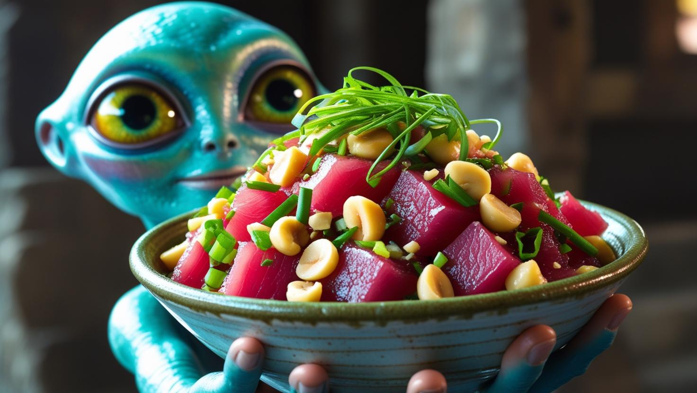

Spicy Ahi Poke Recipe

Description
Spicy Ahi Poke is a local staple in the State of Hawai'i.
Although this dish can be purchased pre-made in the seafood section of many local grocery stores,
here you will be able to learn how to make and enjoy this dish from the comfort of your home.
Let's check out the recipe below!
Ingredients
- Raw Tuna
- Shoyu
- Sriracha
- Sesame Oil
- Kewpie Mayo (regular mayo works too)
- Green Onion
- Sesame seeds
- Macadamia nuts (optional)
Steps
- Cut the raw tuna into cubed/bite-sized pieces
- Finely chop some Green Onion
- Finely chop some Macadamia Nuts(optional)
- In a bowl, add:
- 1/4 cup Shoyu
- 1 tbsp Sriracha
- 1 tbsp Sesame Oil
- Chopped Green Onion
- 1 tsp Sesame Seeds
- Chopped Macadamia nuts (optional)
- Mix all ingredients together thoroughly
- Cover the bowl with plastic wrap and store in the fridge to chill until time to eat.
- When time to eat, plate and enjoy!